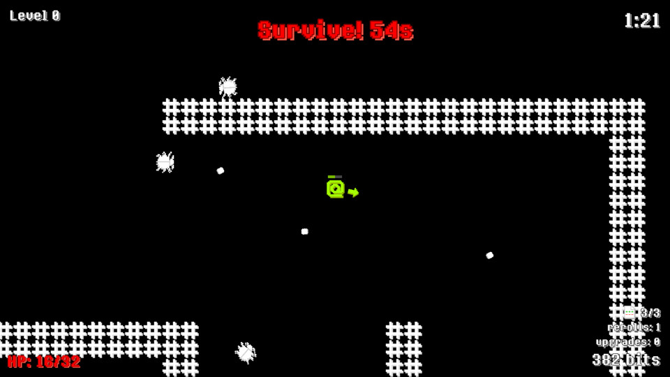

This was a game that I made for a university game jam during
spring break in 2026.
The theme was "patchwork" and one of my ideas when I heard that
was the theme was "*work*ing on *patch*ing bugs". Admittedly that
was a little contrived, but I still tried making a game themed
around that. The basic idea of this game is that you have
to find patch files in a procedurally generated maze while avoiding
various bug enemies. Once you beat a level, you can enter a store
to trade in the points you earned (the game calls them 'bits' to
keep with the computer programming theme) for various random
upgrades. It's kind of a simple game - I actually started a little
late and only spent four days developing it but I really do like
the end result and I think it is decently fun to play.
After the jam I made a post jam update in which I addressed some
feedback I got - namely that the game was too hard and frustrating
at times.
You can browse the source code on
GitHub.
If this game sounds interesting, you can play/download it on
itch.io.